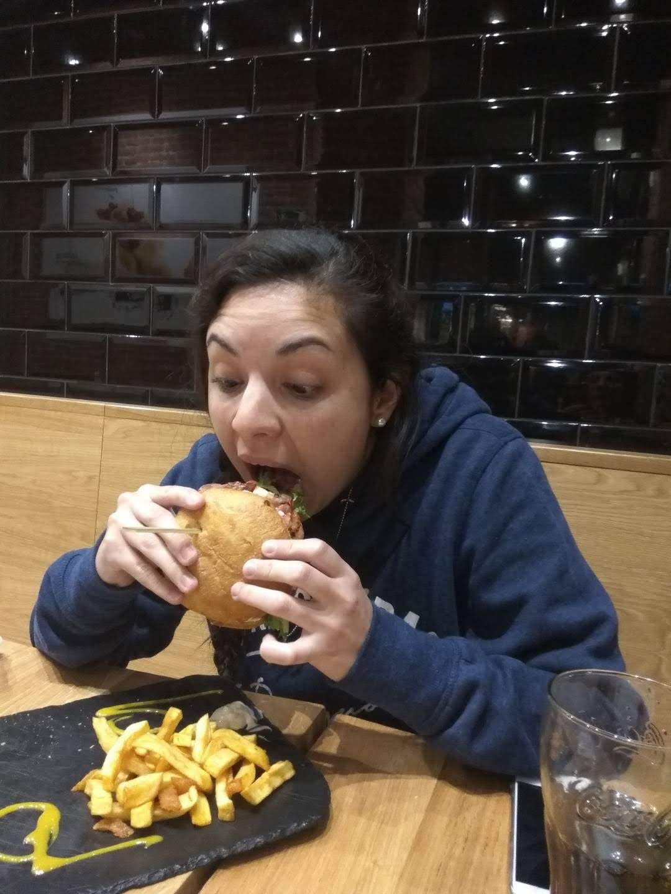
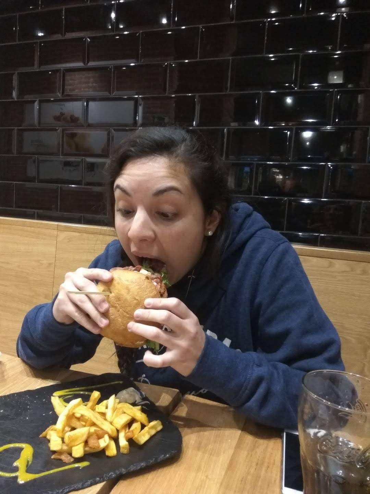
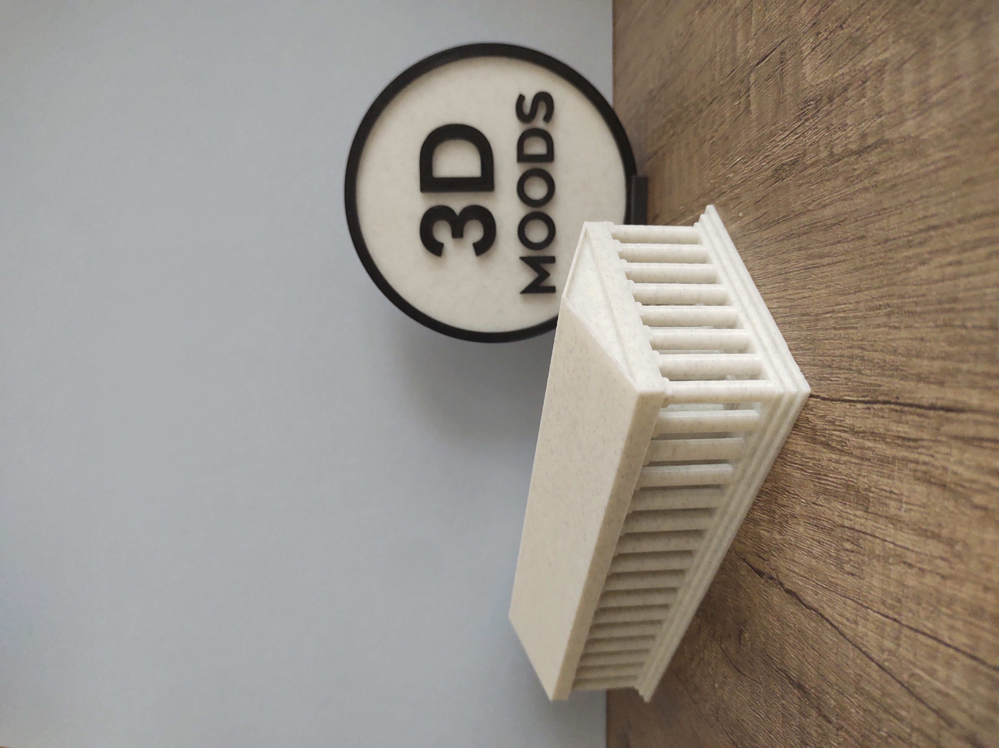
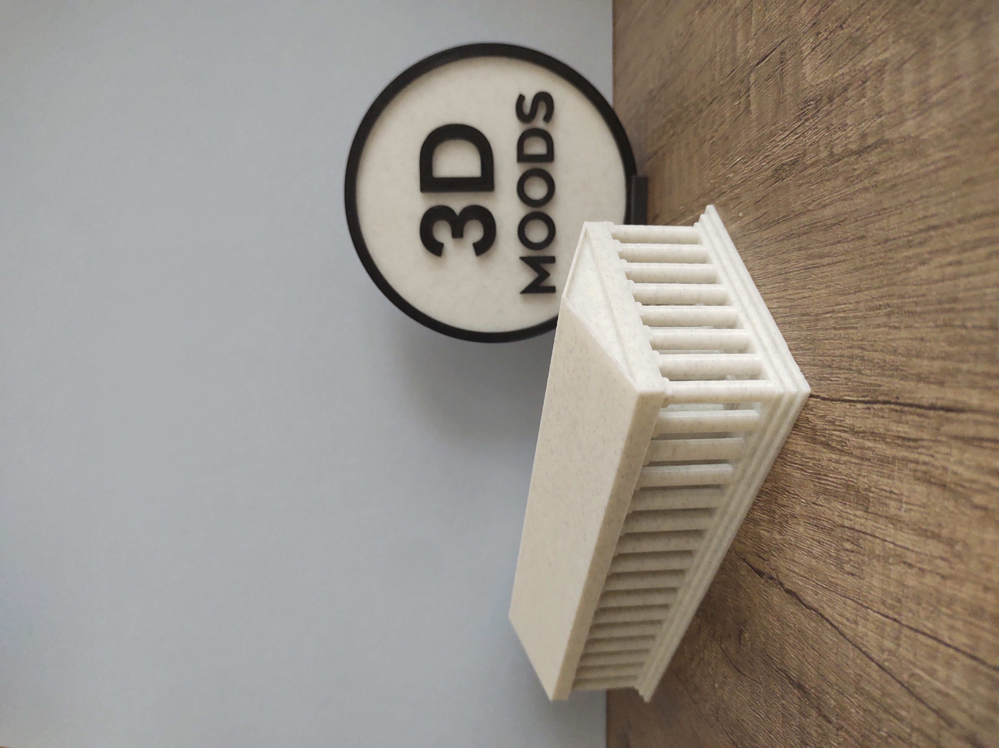

Hola! Soy Laura, tengo 30 años, estudio Arquitectura. Soy la encargada de los diseños y la parte gráfica de 3D MOODS.


Hola! Soy Esteban, tengo 26 años, trabajo como data Analist. Soy el encargado del funcionamiento y mantenimiento de nuestras impresoras
Hola! Soy Ají, la mascota. Tengo 8 años y soy la encargada de ladrar y avisar cuando hay palomas cerca de las oficinas de 3D MOODS
En este encargo nos tocó elegir diseños para decorar el stand de la Colectividad Griega de Tucumán en la Fiesta de las Colectividades
 


Este encargo fué pedido por una cátedra de la Facultad de Arquitectura y Urbanismo para explicar el comportamiento de los apoyos estructurales
Luego estos fueron encargados para explicar la estructura de una cubierta con vigas reticuladas y el transporte de los esfuerzos.